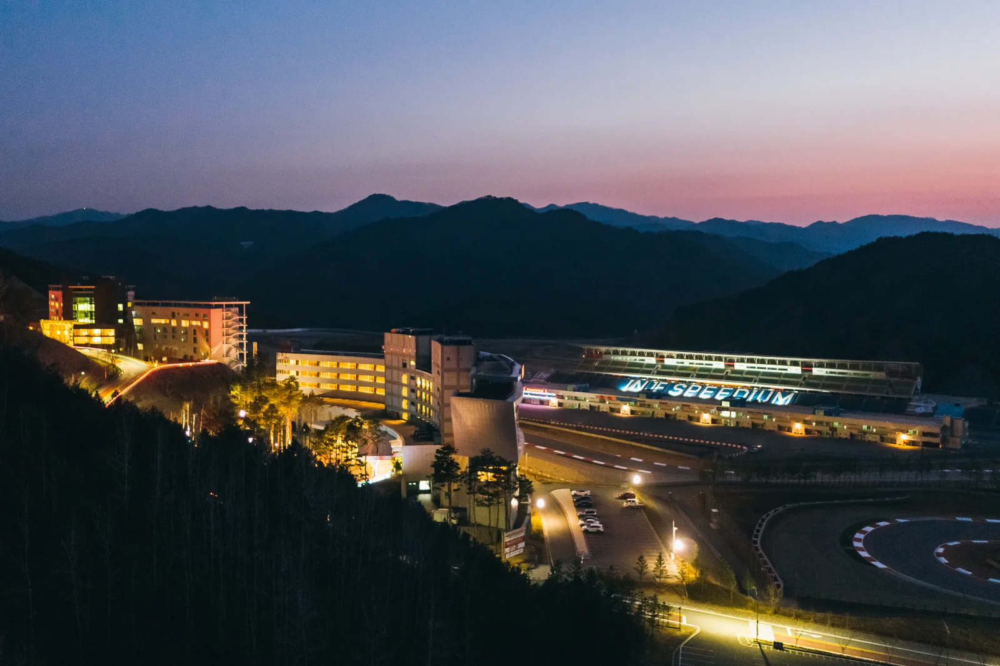
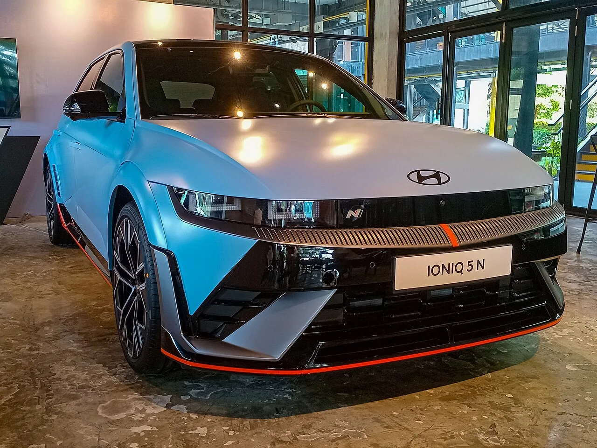
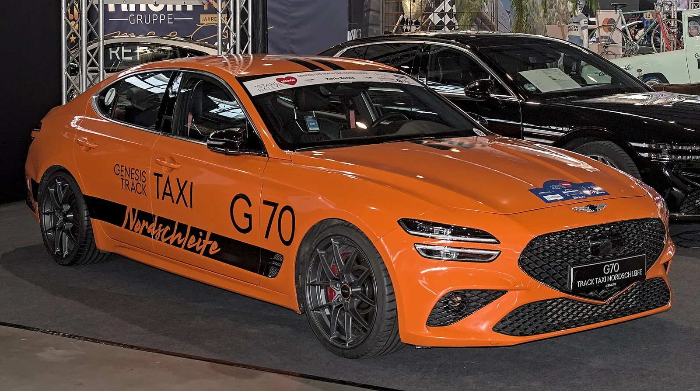

▲ 인제스피디움 전경. 연장 3.908km 서킷과 호텔·체험 시설이 함께 조성돼 있다 ⓒ Godrnehd, Wikimedia Commons (CC BY-SA 4.0)
서킷은 프로의 영역처럼 느껴집니다. 레이싱 슈트를 입은 사람들과 롤케이지를 단 차량이 먼저 떠오릅니다.
실제로는 그렇지 않습니다. 인제스피디움은 회원제가 아니고, 일반인이 자신의 차로 달릴 수 있는 구조입니다.
1. 3.908km라는 길이
인제스피디움 서킷은 연장 3.908km입니다. 강원도 인제군 산지에 조성돼 고저차가 큰 레이아웃이 특징입니다.
평지 서킷과 달리 오르막과 내리막이 이어집니다. 이 때문에 브레이크 부담이 큰 코스로 꼽힙니다.
📍 서킷에서 가장 먼저 지치는 것은 브레이크입니다
일반도로에서 브레이크가 과열되는 일은 드뭅니다. 서킷에서는 몇 바퀴 만에 나타납니다.
패드가 과열되면 마찰계수가 떨어지는 페이드가 오고, 브레이크액이 끓으면 페달이 바닥까지 들어가는 베이퍼록이 발생합니다. 순정 패드와 일반 브레이크액으로는 한계가 빨리 옵니다.
2. 진입 절차는 단순합니다
| 단계 | 내용 |
|---|---|
| 라이센스 | 발급 비용 10만 원 수준 (변동 가능 — 접수처 확인) |
| 교육 | 온라인 사전 교육 또는 스포츠주행 일자 현장 교육 |
| 접수 | 서킷체험 프로그램은 선착순 현장접수 |
| 안전장구 | 규정에 맞는 장구 필수 |
안전장구를 갖추고 오전 일찍 방문하면 접수가 가능한 구조여서, 문턱이 낮은 편으로 평가됩니다. 사전에 온라인 교육을 이수해두면 현장에서 절차가 짧아집니다.

▲ 서킷에는 전용 세팅 차량도 오지만, 순정 상태의 일반 차량도 함께 달린다 ⓒ Wikimedia Commons
3. 차량 준비는 무엇을 하나
개조가 필요한 것은 아닙니다. 다만 확인해야 할 항목이 있습니다.
| 항목 | 이유 |
|---|---|
| 브레이크 패드 | 잔량이 적으면 몇 바퀴 만에 한계 |
| 브레이크액 | 수분 함유량이 높으면 베이퍼록 위험 |
| 타이어 | 마모 상태 확인 · 공기압은 주행 후 상승 감안 |
| 엔진오일·냉각수 | 고부하 연속 주행으로 온도 상승 |
| 실내 정리 | 느슨한 물건은 전부 제거 — 코너에서 굴러다님 |
📍 보험을 먼저 확인하세요
일반 자동차보험은 서킷 주행 중 사고를 보상하지 않는 경우가 많습니다. 경주·경기·시험 목적 주행이 면책 사유로 규정돼 있는 약관이 일반적입니다.
수리비를 전액 부담할 수 있다는 전제로 접근하는 편이 안전합니다. 이 점이 서킷 주행에서 가장 자주 간과되는 부분입니다.
4. 왜 굳이 서킷인가
속도를 내려는 것이 목적이라면 서킷은 답이 아닙니다. 비용과 준비가 만만치 않기 때문입니다.
실질적인 가치는 다른 데 있습니다. 내 차의 한계를 안전한 환경에서 확인해보는 것입니다. 일반도로에서는 절대 알 수 없는 영역입니다.
| 항목 | 내용 |
|---|---|
| 제동 한계 | ABS가 개입하는 지점의 실제 감각 |
| 언더스티어 | 차가 돌지 않는 순간의 조향 반응 |
| 하중 이동 | 브레이크·가속에 따른 접지력 변화 |
| 전자장비 | ESC가 개입할 때 차가 어떻게 반응하는지 |
이 감각을 한 번 겪어본 운전자와 그렇지 않은 운전자는 일반도로에서의 판단이 다릅니다. 빗길이나 급제동 상황에서 차가 어떻게 움직이는지 미리 알고 있기 때문입니다.
5. 전기차는 조건이 다릅니다
전기차로 서킷을 달릴 때 가장 큰 변수는 배터리 온도입니다.
고출력을 연속으로 쓰면 배터리가 과열되고, 보호를 위해 출력이 제한됩니다. 몇 바퀴 만에 가속이 눈에 띄게 둔해지는 현상이 나타납니다. 고성능 전기차들이 트랙 모드나 별도 냉각 로직을 갖추는 이유입니다.

▲ 고성능 전기차는 트랙 주행을 전제로 배터리 냉각과 출력 제어 로직을 따로 갖춘다 ⓒ Ethan Llamas, Wikimedia Commons (CC BY-SA 4.0)
충전 계획도 함께 필요합니다. 서킷 주행은 전비가 극단적으로 나빠집니다. 인제까지의 왕복 거리와 현장 충전 가능 여부를 미리 확인해야 합니다.

▲ 국내 브랜드도 트랙 주행을 전제로 한 프로그램을 운영해 왔다
6. 강원도 코스와 묶입니다
인제는 내설악 권역입니다. 한계령과 미시령이 가깝고, 동해안까지도 멀지 않습니다.
서킷 하나만 보고 왕복하기에는 거리가 있습니다. 인근 고갯길 드라이브나 동해안 코스와 묶어 1박 2일로 구성하면 이동 시간이 덜 아깝습니다. 시설 내에 숙박 시설도 함께 조성돼 있습니다.
7. 정리
인제스피디움은 강원도 인제군에 있는 연장 3.908km 서킷으로, 회원제가 아니어서 일반인도 자차로 주행할 수 있습니다. 라이센스 발급 비용은 10만 원 수준으로 안내되며, 요금은 변동될 수 있어 접수처 확인이 필요합니다.
교육은 온라인 사전 이수 또는 스포츠주행 일자의 현장 교육 중 선택할 수 있고, 서킷체험 프로그램은 선착순 현장접수로 운영됩니다. 안전장구를 갖추고 오전 일찍 가면 접수가 가능한 구조입니다.
준비에서 가장 중요한 것은 브레이크입니다. 고저차가 큰 레이아웃이라 부담이 크고, 패드 잔량과 브레이크액 상태가 한계를 결정합니다. 일반 자동차보험은 서킷 주행 사고를 면책하는 경우가 많으므로 약관을 먼저 확인해야 합니다.